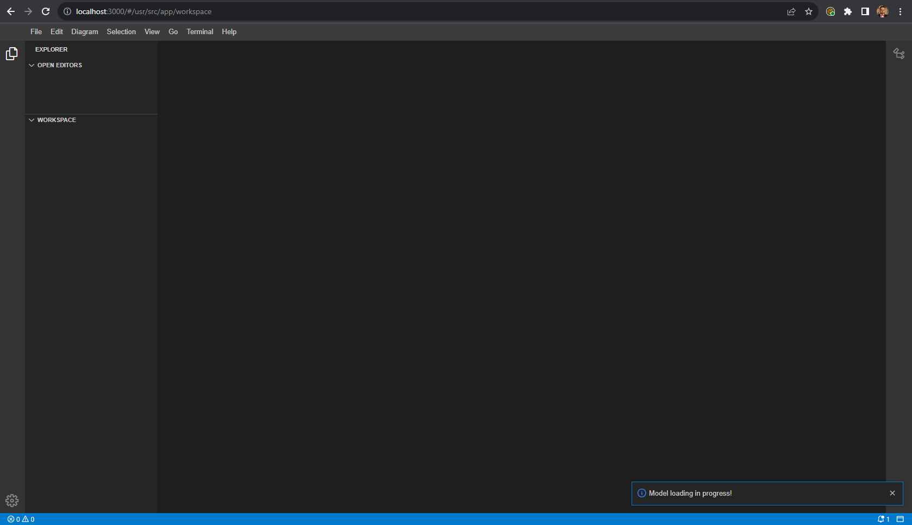
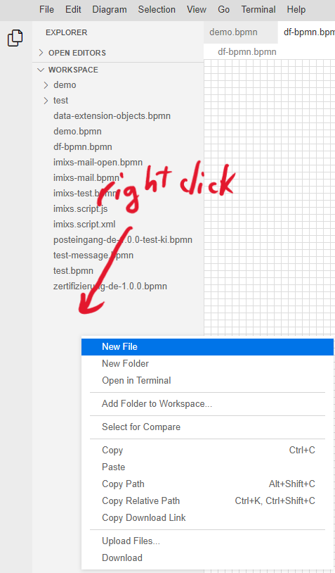
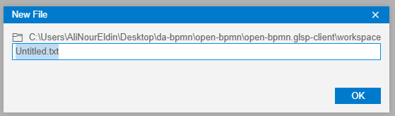
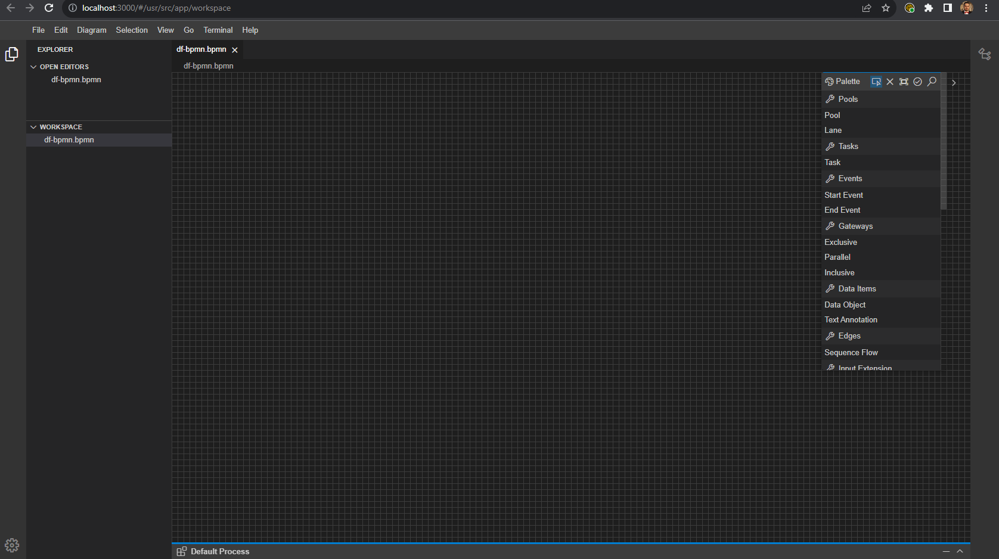

Before you start modeling, you must first install the DF-BPMN tool and Bonita Studio. You should follow the
instructions for Bonita Studio
here. Then, you can proceed to
follow the instructions below to install the DF-BPMN tool.
You have the option to either manually build and install all of the
environments
or use the Docker version for a faster and easier setup.
Here, we will demonstrate how to install the DF-BPMN tool using a Docker image.
-
Download the Docker application and create
an account.
-
In your terminal or command prompt, run the following command: docker pull
alinoureldin/df-bpmn:latest
-
Before running the next command, you should:
-
Replace <openai-key> in the next command with the key you received by email.
-
Change the <bonita-wokspace> to the path of your Bonita workspace folder.
-
Run the following command after change the <openai-key> and <bonita-wokspace>: docker run
--name="df-bpmn" --rm -p 3000:3000 -p 3001:3001
--env OPENAI_KEY=<openai-key> -it -v <bonita-wokspace>:/usr/src/app/bonita
alinoureldin/df-bpmn
-
Note: you don't need to add < > in the openai-key, nither in the bonita-wokspace.
Testing for your tool
You can access the tool using the following link
http://localhost:3000/#/usr/src/app/workspace
The image below is the default page for the tool.

Create a New BPMN file
-
Right-click on the white space, and then click on 'New File'.

-
Rename it to *.bpmn.

Double-click on the created file, and you can now start modeling in the DF-BPMN tool.
